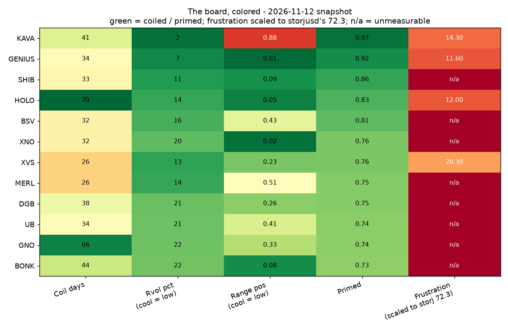
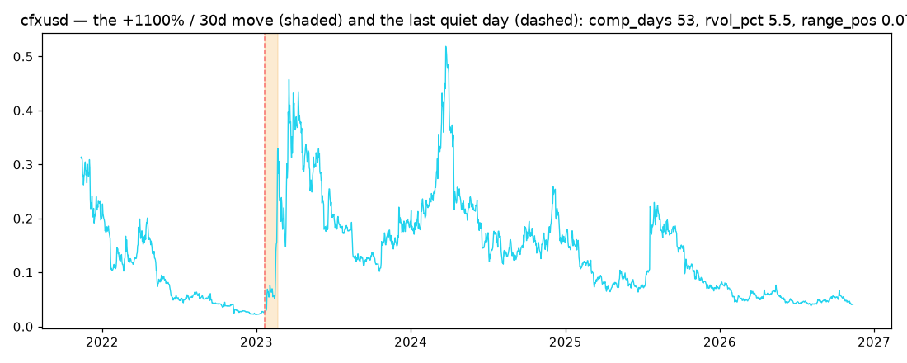
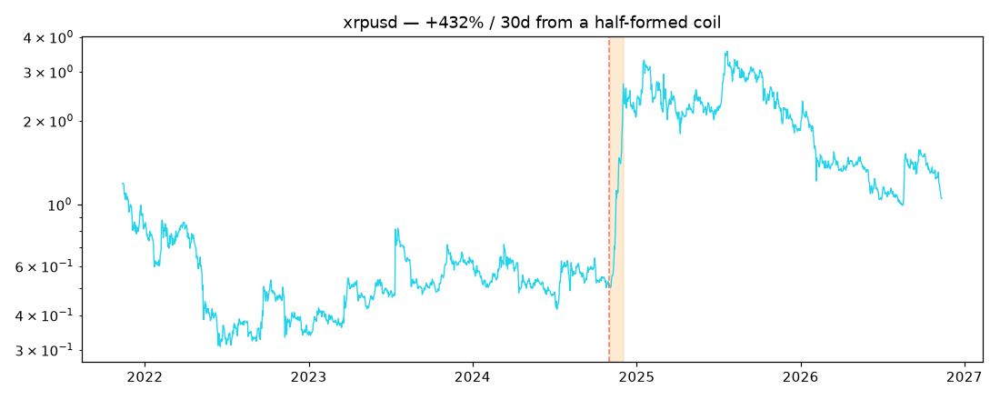
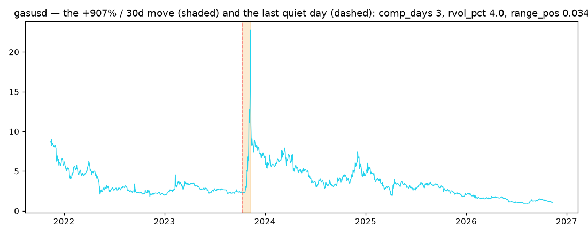
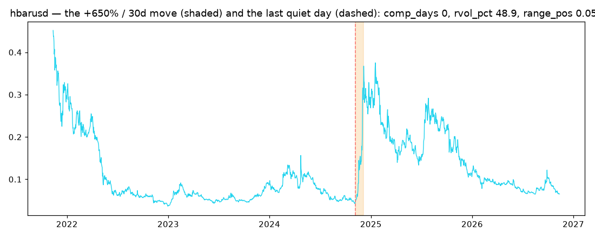
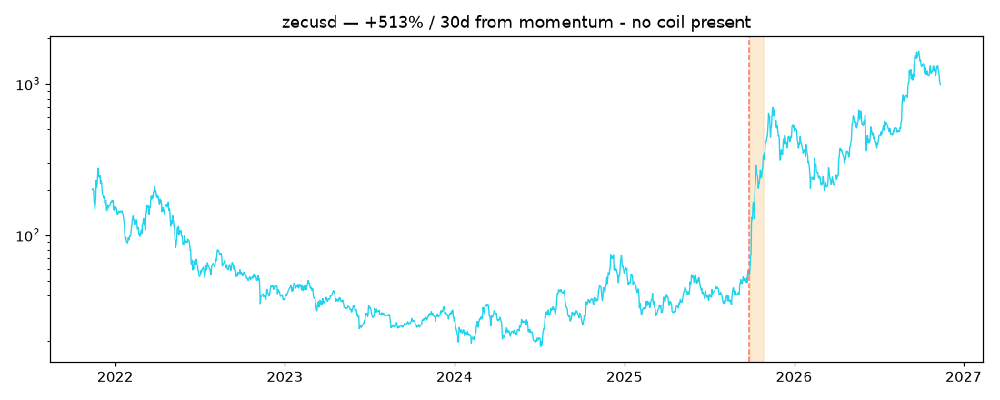
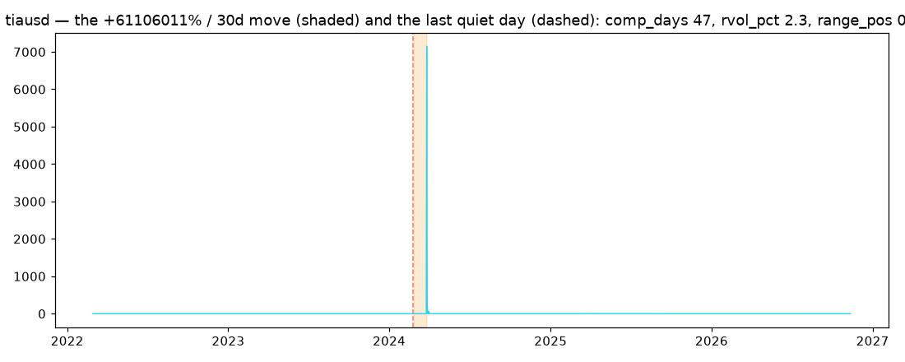

The Board, Colored.
— after Revolver. The board, colored, is the counting.
This page replaces the old AVFI v4 detection page. That page marked stretch-z confirmations across 185 charts — a design-sample artifact of the pre-WHAT era, superseded by the clue program. By directive it is removed and replaced with what the program actually studies now: the current board as a heat map, and the file of significant moves already studied. Everything here is descriptive — candidates and case files, never claims.
1. The heat map — the board, colored
Snapshot 2026-11-12. The twelve deepest artifact-clean, stablecoin-free coils of the top-500 board. Green = coiled, quiet, primed; red = hot or extended. The frustration column is scaled to storjusd's 72.3 (the strongest grievance ever scored on a candidate); n/a = no funding/OI market exists for that coin, so the grievance is unmeasurable. Read the table the way the program reads the board: the left half is the coil, the right half is the grievance — and the grievance column is the reason the program is flat.

| Series | Cap rank | Coil days | Rvol pct | Range pos | Primed | Frustration |
|---|---|---|---|---|---|---|
| KAVA | 320 | 41 | 2.1 | 0.88 | 0.97 | 14.3 |
| GENIUS | 271 | 34 | 6.8 | 0.01 | 0.92 | 11.6 |
| SHIB | 37 | 33 | 11.2 | 0.09 | 0.86 | n/a |
| HOLO | 456 | 70 | 13.9 | 0.05 | 0.83 | 12.0 |
| BSV | 128 | 32 | 16.1 | 0.43 | 0.81 | n/a |
| XNO | 480 | 32 | 19.5 | 0.02 | 0.76 | n/a |
| XVS | 467 | 26 | 13.0 | 0.23 | 0.76 | 20.3 |
| MERL | 491 | 26 | 13.8 | 0.51 | 0.75 | n/a |
| DGB | 393 | 38 | 20.9 | 0.26 | 0.75 | n/a |
| UB | 141 | 34 | 21.3 | 0.41 | 0.74 | n/a |
| GNO | 137 | 66 | 21.7 | 0.33 | 0.74 | n/a |
| BONK | 146 | 44 | 22.0 | 0.08 | 0.73 | n/a |
Frustration reference points: storjusd 72.3, FTX before its crash 38.4. The whole current board scores under 21.
2. The significant moves studied
The case file of the biggest genuine moves in the panel, with the pre-move state reconstructed causally at the last quiet day. Data artifacts (re-denominations, launch-era near-zero prices) were flagged and excluded before this file was written. These are the moves the compression and grievance logic was built against — including the one that came with no coil, kept in the file precisely because a theory that only remembers its hits is marketing.






Machine-readable sources:
paper/research/clue_scan/top500_scan_table.csv,
top500_frustration.csv,
move_case_studies.csv. Descriptive only; multiplicity binds;
C7's dataset stays sealed.